SCREEN 01
Home · 로딩 전과 로딩 중
Figma Home 기본 프레임, iOS 로딩 전, iOS 로딩 중을 비교합니다. 이 화면만 기존 Home 테스트 데이터로 촬영했으며 나머지는 화면별 진입 상태로 촬영했습니다.

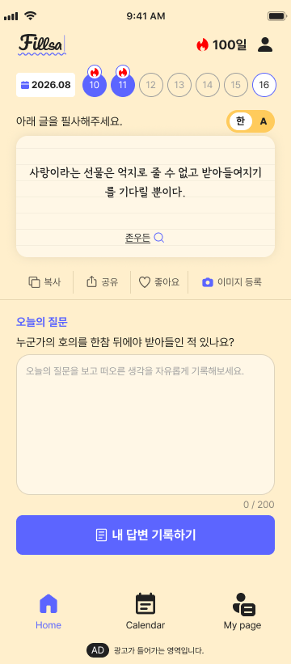

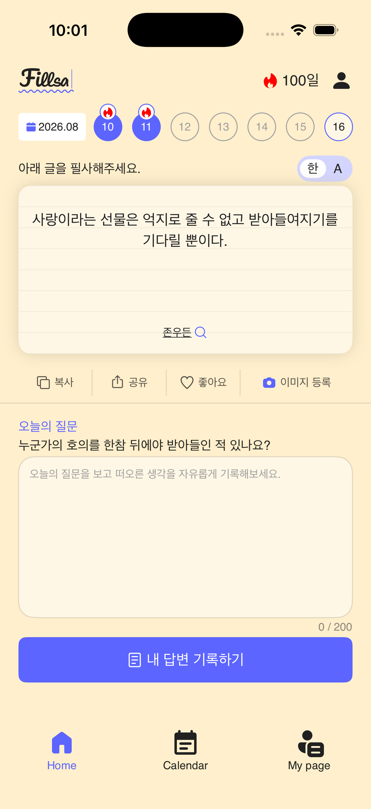

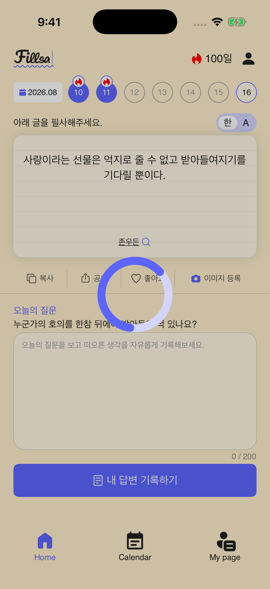
실행 영상
MP4 파일 직접 열기 · 시뮬레이터 화면 녹화, H.264, 720p 축소본
SCREEN 02
Splash · 시작 화면

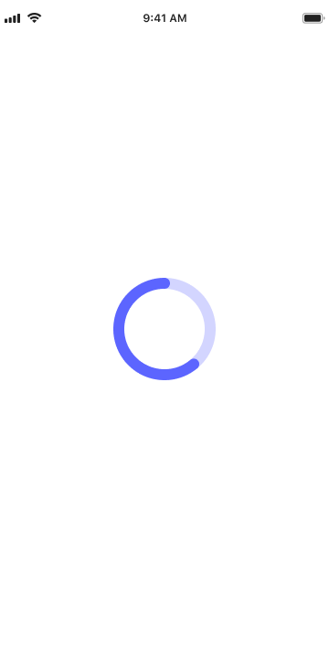

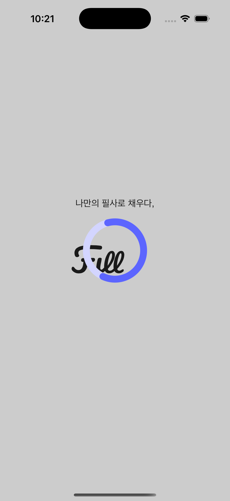
SCREEN 03
Login · 로그인

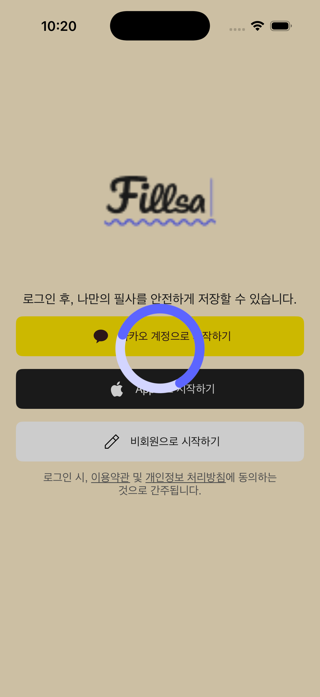
SCREEN 04
Onboarding Guide · 사용 안내

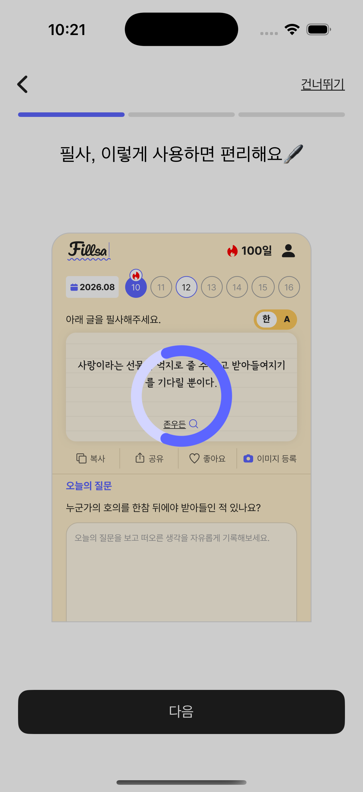
SCREEN 05
Quote List · 명언 목록

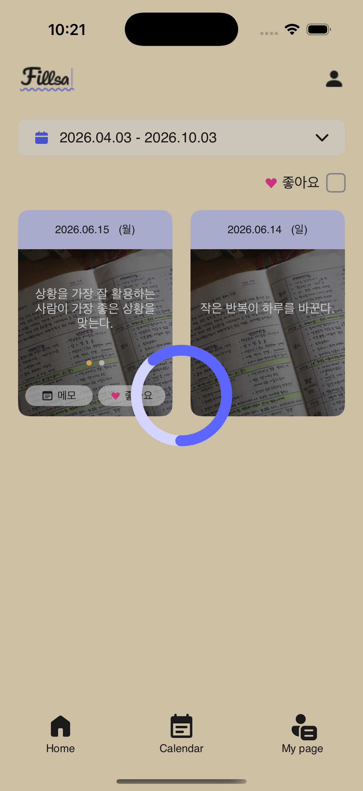
SCREEN 06
Calendar · 달력

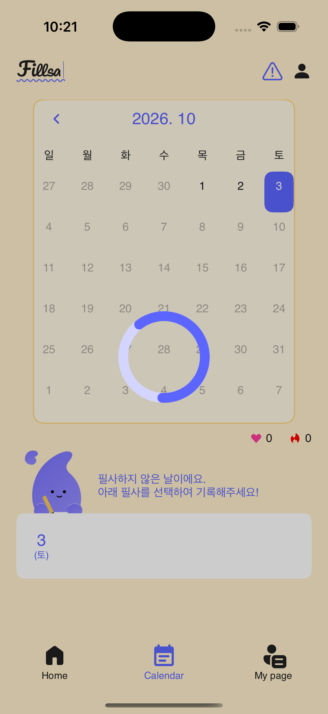
SCREEN 07
My Page · 설정

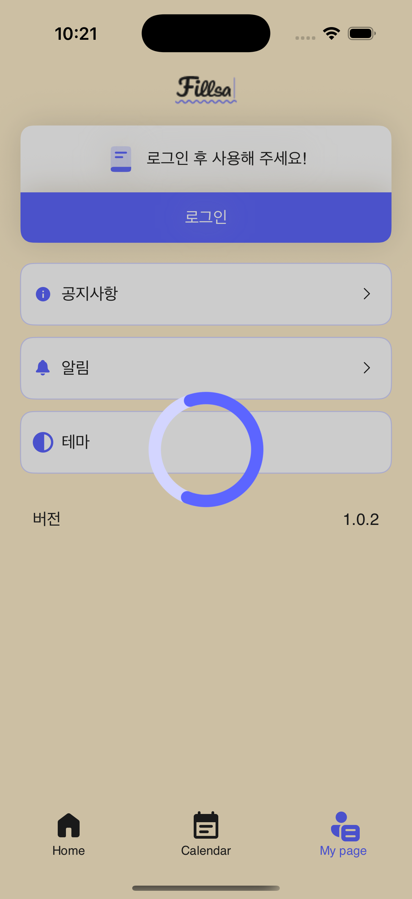
SCREEN 08
Typing · 필사 입력

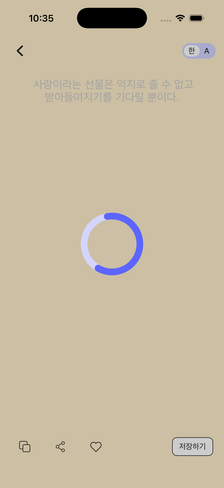

SCREEN 10
Quote Detail · 명언 상세

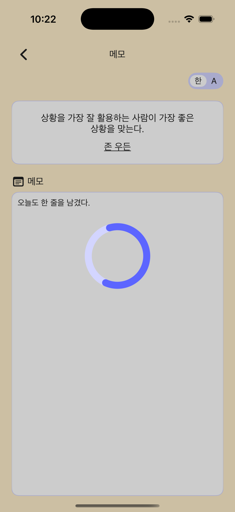
SCREEN 11
Memo Insert · 메모 입력

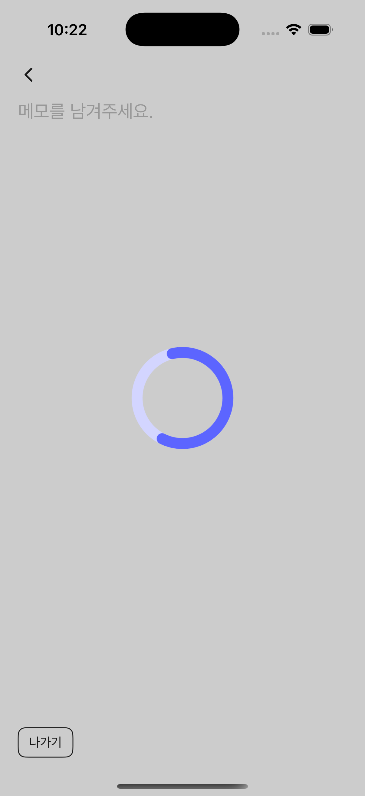
SCREEN 12
Notice · 공지 목록

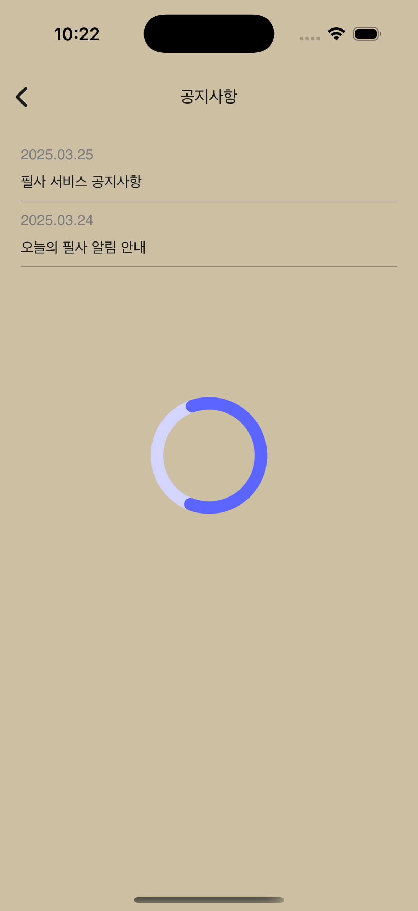
SCREEN 13
Notice Detail · 공지 상세

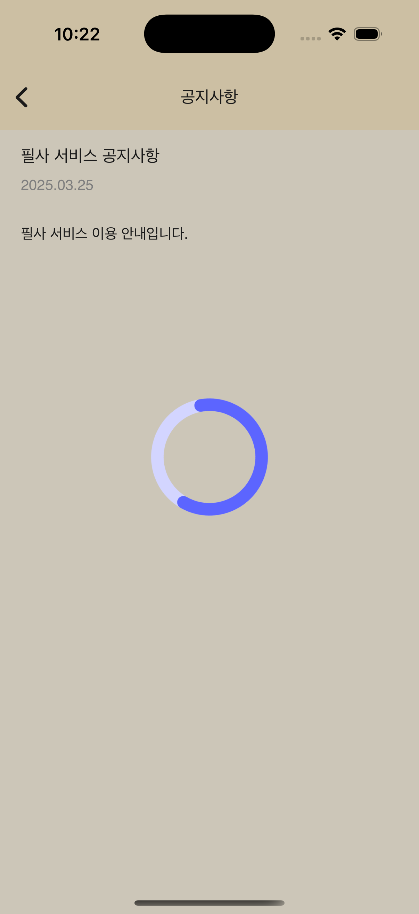
SCREEN 14
Alert · 알림 설정

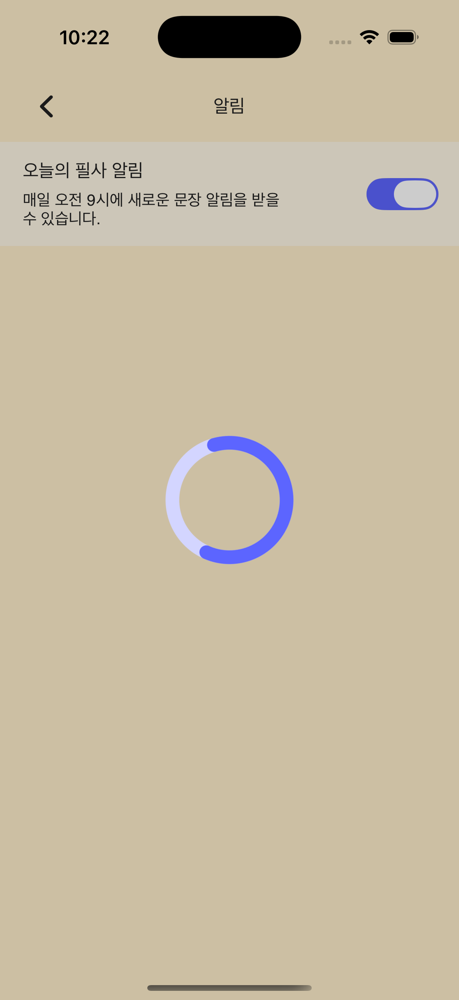
SHARED COMPONENT
전역 스피너 · Figma와 실제 화면
Figma 원본은 흰 바탕의 단독 로딩 화면입니다. 실제 구현은 사용자 요청에 따라 기존 화면 위에 검정 20% 딤을 합성합니다. 따라서 두 전체 화면의 배경이 다른 것은 의도된 차이입니다.
EVIDENCE
검증 결과와 남은 판단
| 스피너 원본 | Figma에서 내려받은 SVG와 앱 자산의 SHA-256 일치. 112×112pt SVG가 120×120pt 중앙 영역에 배치됩니다. |
|---|---|
| 화면 범위 | AppScreen의 Splash·Login·Onboarding·Typing·Share·Quote Detail·Memo Insert·Notice·Notice Detail·Alert, 메인 탭의 Home·Quote List·Calendar·My Page까지 14개 화면입니다. 각 섹션의 PNG와 MP4는 해당 화면에서 촬영했습니다. |
| 중앙 정렬 | 14개 화면을 차례로 연 UI 테스트에서 화면 식별 요소와 스피너가 존재하고 중심 좌표가 앱 화면 중심과 일치함을 확인했습니다. |
| 딤 색상 | Home 배경의 RGB (255, 239, 204)가 로딩 중 (204, 191, 163)으로 바뀌어 검정 20% 합성을 확인했습니다. |
| 터치 차단 | Home에서 딤 아래 명언 카드를 눌러도 화면 이동이 발생하지 않는 UI 테스트가 통과했습니다. 다른 13개 화면은 동일한 앱 루트 오버레이를 사용하지만 화면별 터치 시도는 이번 보고서에서 별도로 검증하지 않았습니다. |
| 시스템 키보드 | 키보드는 앱 오버레이보다 위에 표시되므로 로딩 시작 시 앱 루트에서 입력 포커스를 해제합니다. 자동 포커스가 있는 필사 화면은 로딩 중 재활성화하지 않습니다. Home 입력창과 필사 화면의 표적 UI 테스트가 통과했고 필사 PNG/MP4는 수정 후 다시 촬영했습니다. |
| 최종 Figma 판정 | 보류. Figma 360×720 흰 단독 화면과 iOS 402×874 Home 위 딤 화면은 전체 프레임 동일 조건 비교가 불가능합니다. 컴포넌트·동작 증거는 QA 기록에 정리했습니다. |